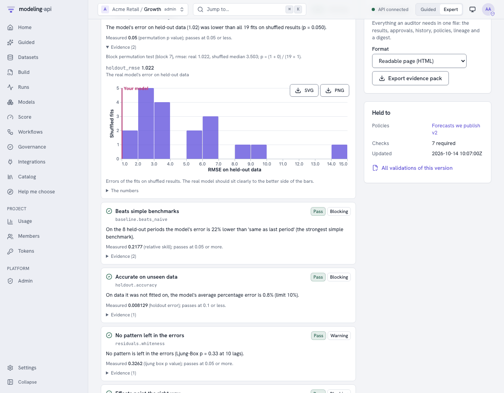

Can you trust this model? v0.5¶
A flexible model will find something in all data. Give a marketing-mix model ten channels and two years of weekly sales. It will tell you what each channel returned, also if the sales were random. The fit statistics will look good. The charts will look convincing. There is only one way to know if the model learned something real. Show it data that has nothing to learn, and make sure that the model sees this.
The null tests of the platform do this. Thus a governance policy can make them necessary before a person uses a model. The first half of this page tells about the tests without formulas. The second half gives the statistics. Validate models with governance policies tells how to use policies, validations, approvals and evidence packs.
In plain words¶
Shuffled results: does the model beat luck?¶
The test does these steps:
- Take the drivers that the model uses, for example weekly spend and prices.
- Shuffle the drivers in time. The spend of each week goes to a different week, but the sales stay exactly the same.
- Fit the same model to the shuffled data.
- Measure how well the shuffled fit predicts weeks that it was not fitted on.
- Do steps 2 to 4 twenty or forty times.
The shuffle removes the relation between spend and sales, by design. But it does not change the trend and the season of the sales.
A model without drivers is a forecast from the past of the series. For this model, the test uses the series itself. It shuffles the changes from week to week and adds them up again. This keeps the quantity of wander, but removes all that is predictable.
Possibly the model really learned how sales depend on the drivers. Then it predicts the real held-out weeks much better than the shuffled versions predict their weeks. If one shuffled fit in twenty does as well as the real fit, the skill of the model is like the skill of noise. The check gives this as a p-value. This is the share of shuffled fits that did as well or better. A small correction makes sure that it is never exactly zero.
| What you see | What it means |
|---|---|
| "lower than all 39 fits on shuffled results (p = 0.025)" | It is very improbable that the skill of the model is luck. |
| "1 of 20 fits on shuffled results did as well (p = 0.095)" | Borderline: a real signal, but weak, or too few shuffles to know. |
| "9 of 20 did as well (p = 0.48)" | The model fits noise. Do not use it to make decisions. |
The test shuffles the drivers in blocks. A block is a sequence of weeks that moves together. Thus the flighting patterns of the drivers stay. The test breaks only the link between the drivers and the result. The test does not shuffle the sales. Thus, if a model wins only because of a trend or a season, it does equally well on the shuffled copies. Then it fails the check.

Persistence does not trick this test. Some series wander (a random walk). On such a series, a model that differences the series gets much of its skill from "next week is like this week". But the shuffled fits also keep that persistence, because the test does not shuffle the result. Also, the test measures skill against the null forecast. Thus only the contribution of the drivers counts. The ARIMAX of the cookbook on such a series has a price driver that is really important. It forecasts better than all 20 shuffled fits (p = 0.048, the output).
Fake drivers: does the model credit anything it is given?¶
The test adds three drivers that are pure noise, and fits the model again. The fake drivers are copies of a real spend column that are mixed in time. Or they are random numbers with the same average and spread. A trustworthy model gives them almost nothing. This is a few hundredths of a percent of sales, with a range that easily includes zero.
If a channel of random numbers gets 8% of sales, the model gives credit too easily. Thus the credit that it gave your real channels is also suspect. The usual causes are these:
- Too many drivers for the quantity of history.
- Priors that are too wide.
- Drivers that move together.
Shifted drivers: is it the timing, or just the season?¶
The test moves each driver six months away from its real time, and fits the model again. Real advertising effects must go away, because spend in March cannot cause sales in September. If the model still finds most of the effect, it finds the season or the trend. Then it calls this effect advertising.
The other checks, briefly¶
- Beats naive: On weeks that it did not see, the model must be better than two benchmarks: "same as last week" and "same as this week last year". If a forecast cannot do this, it is not worth its complexity.
- Nothing left in the errors: The errors of the model must look like noise. A pattern in the errors shows that the model did not find something predictable.
- Stable over time: If you fit the model again on different parts of the history, the key numbers must not change very much.
- Signs make sense: Spend must not decrease sales. Prices must not increase demand, unless you tell this.
- Assumptions do not decide the answer (Bayesian models): If you make the priors wider and narrower, the answer must almost not move.
- Finds known values: The check simulates data from the fitted model and fits it again. It makes sure that the ranges contain the truth about 90% of the time.
- The fit is complete and stable, the error on unseen data is below your limit, and the data is good enough. The last check means no long gaps, no constant drivers and no negative spend.
What the platform does with the results¶
A policy lists these items:
- The checks that a type of model must pass.
- How strict each check is.
blockingstops validation.warningshows to the reviewer.infois only evidence. - If a second person must approve.
When you validate a model version, the checks run in the sandbox. The platform stores each
result with its evidence. The version becomes validated, awaiting_approval or
checks_failed. You can set endpoints to serve only validated versions. All the results are
in the evidence pack. An auditor can read the evidence pack without access to the platform.
mapi validate model model://growth/geo-mmm@v7 # runs the checks, shows every result
mapi approve "$VALIDATION" --comment "Null tests convincing" # a second person
mapi validations pack "$VALIDATION" --out evidence.html
For statisticians¶
Notation:
yis the target overnperiods.ŷis the predictions of the model.His the held-out periods of the data split of the model.Lis the loss of the check (RMSE by default).
Each refit uses the spec and pipeline of the model through the SDK harness. This is the same
code path as a fit. Each refit has a refit budget (RefitBudget): a maximum of max_refits
refits. Bayesian refits have a maximum of 200 draws and 200 tuning steps on 2 chains.
null.permutation_target - a permutation test with a matching null¶
The statistic has no scale. It is the held-out skill of a refit against the null forecast
on the same dataset, T = 1 − L(model) / L(null forecast). For an integrated series (a random
walk), the null forecast is the last training value. For other series, it is the training mean.
You cannot compare raw held-out errors across shuffles of the result. Their spread comes from
the levels that a shuffle puts in the test periods, not from the model. In simulation, a
level-shuffling test with raw RMSE rejected 35% of random walks and 33% of real AR
alternatives. Thus it had no size and no power.
The null depends on what the model must learn:
- Models with drivers (ARIMAX, marketing mix, regressions on time): The test does not
change
y. It block-permutes the drivers together. Each block hasℓ = max(1, n // 20)periods. Theblockparameter changes this. H0: the drivers have no information aboutyin addition to the trend, season, controls and dynamics of the model. If the refit of a model ignores the drivers, the test uses the method for a model without drivers. A refit ignores the drivers when the first shuffled fit gets exactly the same score. - Models without drivers (ARIMA, ETS, Theta, UC): The test permutes the
d-th differences ofyi.i.d. It integrates them again from the original first values.dcomes from the ARIMA order of the model. If there is no ARIMA order,dis 1 when ADF keeps a unit root or KPSS rejects stationarity. This method keeps the integration order and the distribution of the increments. But it removes predictable dynamics. In simulation (ARIMA(1,1,0), 12 held-out periods,B = 19), it keeps its size on random walks. It rejects AR dynamics much more frequently. - Data without a time order: The classic row permutation of
y, on the held-out loss.
T_b is the statistic of the b-th shuffled refit, b = 1..B. The Monte-Carlo p-value is:
Under exchangeability, this p-value is exact. It is valid at each B. The smallest possible p
is 1 / (B + 1). With the default B = 20, it is 0.048. Thus a 5% test is possible, but
only at the limit. For a 2.5% resolution, use B >= 39. The policy parameter is n_permutations.
The thresholds are on p: pass ≤ 0.05, warn ≤ 0.10, fail above.
null.noise_regressors - placebo regressors measured by ablation¶
The test adds K placebo drivers (n_noise, default 3). Each placebo is one of these:
- A real driver, block-permuted in time (
kind: shuffled_driver). This keeps its distribution and its short-run autocorrelation. - Gaussian noise with the mean and variance of the real driver.
The placebos are new channels of a marketing-mix model, or new variables of other models. Placebos get the default prior of the model. The test never copies the prior or the calibration of a real channel to them. This calibration can be a business-prior or lift-test ROI. If the test copied it, a well-calibrated model would fail because of its prior. The test copies the carry-over and saturation shapes.
After the refit, the test measures the effect share of each placebo through the score path. It does not read the share from a coefficient. The share is a share of the total effect of the real drivers:
If the test cannot measure the effect of the drivers, it uses Σ_t |ŷ_t(full)| as the
denominator. Thus the method works equally for non-linear models (saturation, adstock, trees).
It does not depend on the size of the baseline. The check gives max_k s_k (pass ≤ 2%,
warn ≤ 5%).
For Bayesian models, the check flags a placebo when its share is above the warn limit with a
minimum of 90% posterior probability. This is P(s_k > 2%) ≥ 0.9 for each draw. A rule of
"90% interval excludes zero" cannot work for a marketing mix model, because its channel effects
are positive in all draws. For frequentist models, the check uses Holm's correction for the
K placebos on the placebo p-values. Without the correction, the check flags a good model
about one time in seven runs with K = 3.
A flag changes a nominal pass into a warning. If the share is above the fail limit, the flag
changes it into a failure. Some models have in-sample predictions that follow the stored
history (the statsmodels plugins). These models use |β_k| · Σ_t |z_k,t − z_k,t(off)|.
null.placebo_time_shift¶
The test shifts each driver circularly by each δ in shifts (default ±26 periods). Then it
fits the model again. The statistic is the placebo effect as a share of the real effect,
max_δ Σ|Δ_δ ŷ| / Σ|Δ ŷ| (pass ≤ 0.25, warn ≤ 0.5). The test looks for confounding by
seasonality and trend. A shift of half a year puts annual seasons out of alignment on purpose.
Thus, if an effect stays after the shift, the driver did not cause it.
baseline.beats_naive - out-of-sample skill¶
On H, with the training-only fit, the check calculates
skill = 1 − MAE(model) / min_j MAE(benchmark_j). The benchmarks are forecasts from the
training history:
- Naive (last value).
- Seasonal naive (same period last season).
- Mean.
- Drift.
The check also gives MASE as evidence. Pass ≥ 0.05, warn ≥ 0. For a formal test of the
difference on backtest folds, use the compare.diebold_mariano workflow node:
d_t = L(e1_t) - L(e2_t) (squared or absolute loss)
DM = mean(d) / sqrt(lrv(d) / n) lrv: autocovariances up to lag h - 1
HLN = DM * sqrt((n + 1 - 2h + h(h - 1)/n) / n)
p = 2 * P(T_{n-1} > |HLN|)
There is one h-step error for each backtest fold, and the folds are step periods apart.
Thus only ceil(h / step) − 1 neighbouring folds share test periods. The node uses that number
of autocovariances in lrv. In the correction, it replaces h with that number plus one. The
node reads the spacing from the folds. It needs more paired errors than that number. If there
are too few folds, the node tells this. It does not give a number.
residuals.whiteness¶
The check calculates Ljung-Box Q = n(n + 2) Σ_{k=1..m} ρ̂_k² / (n − k) on the in-sample
residuals of each series. It removes the start-up residuals of a diffuse-initialised fit. These
are the burn-in of the fit itself, for example for differencing or unobserved components. Only
the ARMA terms decrease the degrees of freedom (m − p − q − P − Q). The constant, the drivers
and the variance never decrease them. The smallest p-value across the series counts (pass ≥
0.05, warn ≥ 0.01).
Think about multiplicity. With many series, some rejections are expected. Thus a policy for a
full panel can use severity: warning.
stability.rolling_params¶
The check fits the model again on rolling windows of history (window, by default about half
the sample). For each key estimate, it gives the coefficient of variation across the windows.
If the estimate is near zero, the check scales this value by the standard error of the
estimate. If it did not, a coefficient that moves a small quantity around zero would look
unstable by design. Pass ≤ 25%, warn ≤ 50%.
sensitivity.prior and recovery.simulated¶
Prior sensitivity does these steps:
- It writes out each prior that the model uses. These are its settings with the defaults of
the plugin, and the business priors that the platform translates at fit time. For
mmm.bayesian, the defaults are the default ROI priorLogNormal(0, 1),seasonality.prior_sigmaandtrend.growth_prior_sigma. - It multiplies each prior width by each value of
scales. Widths aresigma,scale,sdandtauunder aprior…key, and keys named…prior_sigmaor…_sigma. It never changes Beta or Gammabeta/bparameters. - It gives the largest relative change of a key posterior mean (pass ≤ 20%).
Recovery is a parametric-bootstrap version of simulation-based calibration. It uses
y* = E[y] + ε* with block-bootstrapped residuals and S refits. It gives the coverage of the
90% intervals for the fitted values (target 90%, pass within 10 points). The platform skips
this check for autoregressive models. For these models, resampled residuals do not make the
same dynamics as the model.
Interpreting a set of results¶
A policy is a multiple-testing procedure. With twelve checks at their own thresholds, a good
model will sometimes warn on something. Severities exist for this reason. Make the checks that
protect the decision blocking:
- For a marketing-mix model, these are the null tests and the signs.
- For a forecast, these are the naive benchmark and the holdout accuracy.
Set the diagnostics to warning or info for the reviewer. Each CheckResult has these
items:
valueandthreshold.message_plainand an expert message.- A
suggested_action. - The evidence: the real score next to each shuffled score, and the share and interval of each placebo.
Thus the reviewer can see how close a decision was.
Try it¶
mapi governance checks # what a policy can require
mapi governance checks --about null.permutation_target --expert
mapi governance policies ls # in force here: tenant-wide first
mapi governance policies create forecast-policy.yaml
mapi validate model model://growth/wf-weekly-readiness-fit@v1 # runs the checks, waits
mapi validations ls --queue # reviewers: what waits for a decision
mapi approve "$VALIDATION" --comment "Null tests convincing; beats naive by 25%"
mapi validations pack "$VALIDATION" --out evidence.html # for the auditor
import yaml
with open("forecast-policy.yaml", encoding="utf-8") as fh:
policy = api.governance.create_policy(yaml.safe_load(fh))
print(policy.id, policy.version, [c.check for c in policy.checks])
# edit and save the next version (refused with 409 if someone saved one meanwhile)
stricter = api.governance.update_policy(
policy.id, policy.model_copy(update={"approvals_required": 2}), expected_version=1
)
for p in api.governance.policies(): # in force in the project: tenant-wide first
print(p.scope, p.name, f"v{p.version}")
validation = api.models.validate(model_id, version, note="Q4 refresh", wait=True)
print(validation.status.value) # validated, awaiting_approval or checks_failed
for r in validation.results:
print(r.check, r.status.value, r.message_plain, r.suggested_action or "")
if validation.status.value == "checks_failed":
validation = api.validations.resubmit(validation.id, note="refitted on clean data")
# A project policy for the forecasts this team publishes (validated by a docs test).
# `mapi governance policies create forecast-policy.yaml`, or
# `api.governance.create_policy(yaml.safe_load(open("forecast-policy.yaml")))`.
name: Forecasts we publish
description: Every forecast must beat naive, survive the null tests and be signed off.
applies_to: {families: [ts]}
checks:
- check: baseline.beats_naive # better than "same as last period"
- check: null.permutation_target # better than on shuffled results
params: {n_permutations: 39} # smallest possible p = 1/40 = 0.025
- check: null.noise_regressors # fake drivers made of noise get ~0 credit
params: {n_noise: 3}
- check: residuals.whiteness # no pattern left in the errors
severity: warning
- check: holdout.accuracy # MAPE on unseen weeks
thresholds: {warn: 0.10, fail: 0.20}
- check: stability.rolling_params
severity: info
require_approval: true # a second person signs off
approvals_required: 1
require_validated_for_promotion: true # endpoints refuse unvalidated versions
A workflow can run the same checks as a node (governance.policy with submit: true). It can
also record the validation itself. See the cookbook.